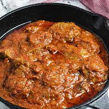

Lasagne Recipe

Beef stew, also known as tomato stew, is a popular West African cuisine, made with fresh tomatoes (or tomato paste), red bell peppers, and scotch bonnet peppers (or habanero peppers). The vegetables are simmered in olive oil, peanut oil, or red palm oil.
Ingredients
- Olive oil
- Vegetables - Tomatoes, Red bell peppers, Scotch bonnet peppers and onions
- Spices - Bouillon powder, thyme, black pepper, curry powder and salt
- Broth / Stock - Beef or chicken
- Beef cuts
Method
- Start by preparing the beef. If not already pre-cut, cut the beef into bite-size pieces, wash and drain. Place in a pot and add enough water to cover it, then add salt and black pepper.
- You don’t need to add a lot of spices here. You need just enough to bring out the flavor but remember spices will still be added to the stew. Let it cook for roughly 20-25 minutes. You can let it cook a bit longer if you want it more tender or a bit shorter if you want it tougher.
- Blend the tomatoes, bell pepper, habanero pepper, and half of the onion in a food processor. Chop the other half onion and set it aside.
- When the beef is ready, drain it out from the stock, but save the stock. We’ll still need it later to add flavor to the stew.
- Add olive oil to a large pot. When heated, add the chopped onions and stir until they begin to wilt. Pour in the tomato mixture, add black pepper, and stir. I don’t add other spices just yet because I will add the stock later on, and I don’t want to run the risk of the stew being too salty. Let it simmer for about 5 minutes.
- Add in the beef and some of the stock. I add half a cup of stock first and possibly add a little more if needed. Add the thyme, bouillon powder, and curry. Taste for salt before adding any.
- Cover and let simmer for 10 minutes on medium-high heat. Your beef stew is ready to eat!
Source: Low Carb Africa